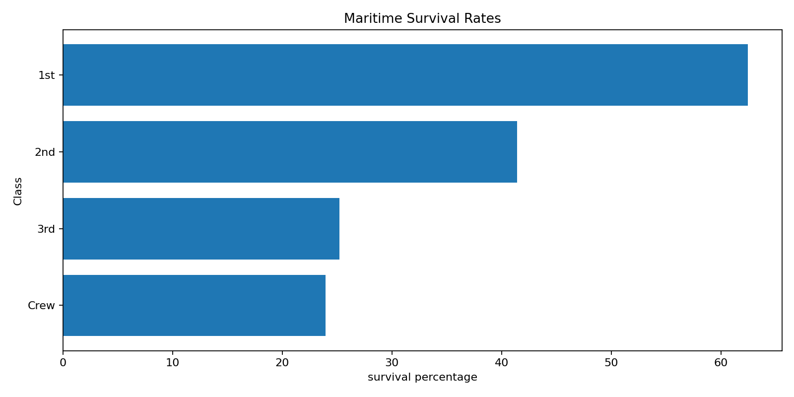

How does recorded survival proportion differ by passenger class and crew?
The largest observed survival percentage is 62.462 for 1st. This ranking is descriptive, not a recommendation.

| segment | rows_used | metric | minimum | maximum |
|---|---|---|---|---|
| 1st | 8 | 62.461538 | 0 | 140 |
| 2nd | 8 | 41.403509 | 0 | 154 |
| 3rd | 8 | 25.212465 | 13 | 387 |
| Crew | 8 | 23.954802 | 0 | 670 |
Aggregated historical counts; passenger composition and access differ across groups.
Compare age- and sex-stratified survival rates before attributing causes.